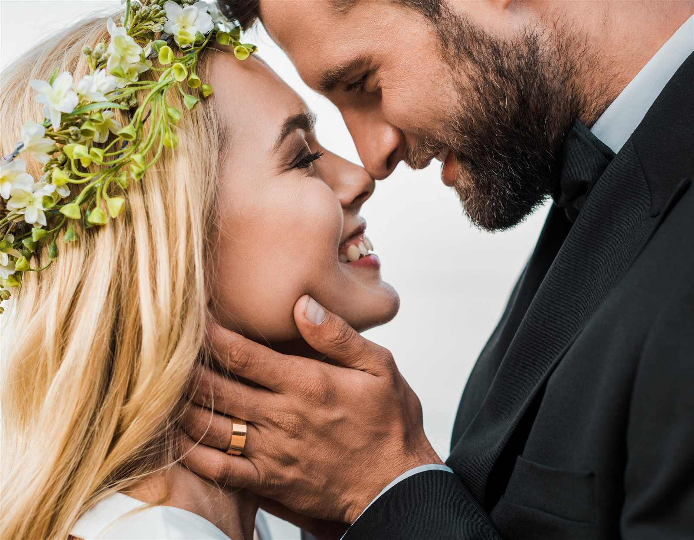

FOTOGRAFIE & HERAUSGEBERIN
Katrin Witt-Martens
Katrin ist Hochzeitsfotografin und Herausgeberin des Hochzeitsmagazins Rostock. Im Magazin verbindet sie die Arbeit mit Brautpaaren mit dem Blick auf Orte und Anbieter der Region.
MARTENS & MARTENS
Fotografie und Film aus Rostock. Mit Raum für die großen Momente und für das, was dazwischen passiert.

FOTOGRAFIE & HERAUSGEBERIN
Katrin ist Hochzeitsfotografin und Herausgeberin des Hochzeitsmagazins Rostock. Im Magazin verbindet sie die Arbeit mit Brautpaaren mit dem Blick auf Orte und Anbieter der Region.

FOTOGRAFIE & HOCHZEITSFILM
Holger begleitet Hochzeiten mit Fotografie und Film. Gemeinsam mit Katrin arbeitet er unter Martens & Martens in Rostock und Mecklenburg-Vorpommern.
Weitere Arbeiten von Holger ↗Vom Ankommen bis zur Feier: Sprecht darüber, welche Teile des Tages ihr festhalten möchtet und wie sich die Begleitung in euren Ablauf einfügt.
Eine gemeinsame Pause im Hochzeitstag. Ort, Zeit und Licht werden mit euch abgestimmt.
Bewegung, Stimmen und Atmosphäre ergänzen die Fotografien. Klärt gewünschte Begleitung und Filmumfang direkt im Gespräch.
Für Galerien, Leistungsumfang und die Verfügbarkeit eures Termins geht es direkt zu Martens & Martens.
Arbeiten ansehen & Termin anfragen ↗Herausgebermarke: Katrin Witt-Martens gibt dieses Magazin heraus. Diese Vorstellung beschreibt die eigene fotografische Arbeit und ist von redaktionellen Anbieterlisten getrennt.